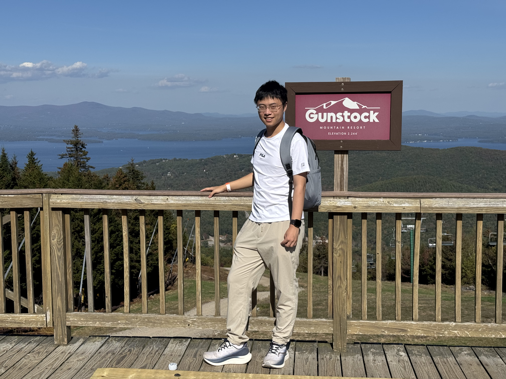

CS Graduate Student at Boston University. Focusing on NLP, LLMs, and Multi-Agent Systems.

I am a researcher and developer passionate about the intersection of Large Language Models and Visual Intelligence. [cite: 8] Currently, I'm exploring how multi-agent workflows can revolutionize software and hardware ecosystems. [cite: 27, 28]
MS in CS @ Boston University
Diffusion Models, Agentic AI
Python, Java, C, C++
PyTorch, NumPy, scikit-learn
Machine Learning, NLP
Git, Linux, Prompt Eng.
Deal Flow Xchange Inc.
Xiaohongshu (RED)
Integrating CLIP and Diffusion Models for improved visual accuracy and semantic consistency. Accepted by NCAW 2024.
Combining Crisscross Search and Sparrow Search for enhanced optimization. Submitted to IJCNN.
I am always open to discussing AI research, internship opportunities, or interesting projects.